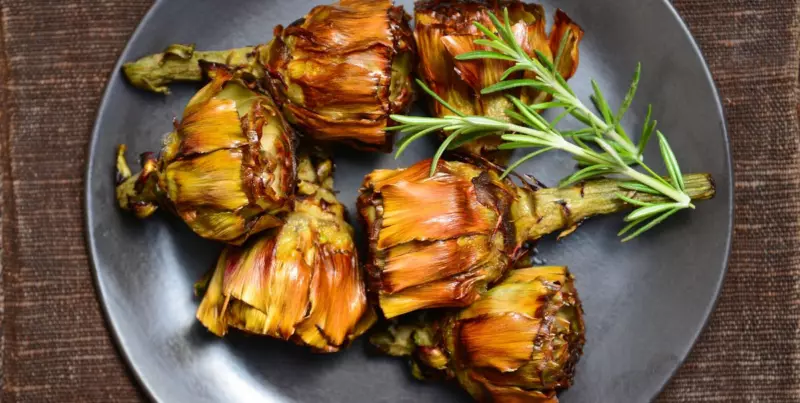

CARCIOFI ALLA GIUDIA (JEWISH-STYLE ARTICHOKES)

Ingredients
- Purple artichokes - 4
- Vegetable oil - to taste - for frying
- Salt - to taste
Preparation
Start by cleaning the purple artichokes: remove the tough end part of the stalk left over from when the artichoke was harvested. Remove the outermost leaves until you can see the ones at the bottom that are lighter in color. To open the leaves out, beat the artichoke against a cutting board, holding it by the stalk, without pressing down too hard so as not to break the leaves
Hold the stalk with cooking tongs to press the artichoke down on the bottom; cook for 6-7 minutes. In this way the flower won't lose its shape. Towards the end of the cooking time, turn the artichoke over onto its side so that the stalk cooks too and then drain it. The first one is ready: drain it on some oil-absorbing cooking paper and repeat with all the others; once your Jewish-style artichokes are ready, don't forget to add salt!
Home